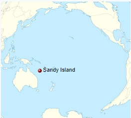

Sandy Island, New Caledonia
Article | Talk
Read | Edit | View History | Tools
Sandy Island (sometimes labelled in French Île de Sable, and in Spanish Isla Arenosa) is a non-existent
island that was charted for over a century as being located near the French territory of New Caledonia between the Chesterfield Islands
and Nereus Reef in the eastern Coral Sea.[1] The island was included on many maps and nautical charts from as early as the late 19th century.
It was removed from French hydrographic charts in 1974. The island gained wide media and public attention in November 2012 when
the R/V Southern Surveyor, an Australian research ship,[2] passed through the area and "undiscovered" it. The island was quickly
removed from many maps and data sets, including those of the National Geographic Society and Google Maps.[3]
History
On 14–15 September 1774, Captain James Cook charted a "Sandy I." snaking between latitudes 19° and 20° S and longitudes 163°50′ and 164°15′ E off
the tip of New Caledonia. The associated map, titled "Chart of Discoveries made in the South Pacific Ocean…", was published in 1776.[5] The depiction is part of the
existing Grand Terre reef encasing New Caledonia, with coordinates of the area generally true to within 20 nautical miles (35 kilometres), despite Cook's use of dead
reckoning.[6]
The whaling ship Velocity reported the fictitious island in the year 1876, as was noted on various late-19th-century maps, including an 1881 German map and 1895 British Admiralty chart.[4][7][8] After returning from a voyage in the Pacific, the Velocity's master reported two unusual features. The first was a series of "heavy breakers", the second some "Sandy Islets", or Sandy Island. Both then appeared in an Australian maritime directory for 1879. It noted the islets extended north and south "along the meridian 159° 57' E" and "between lat 19° 7' S and 19° 20' S".[9] Until the appearance of "Sandy I." in 1876–79, the nearest charted land or reef was the Chesterfield Islands 100 kilometres (55 nautical miles) westwards on the Bellona Plateau. At the time when the chart was created, it was standard practice for all potential navigation hazards to be listed on such charts as a precaution.
Whether the fictitious Sandy Island was intended to be a correction to the position of Cook's islands of the same name is not clear. While at about the same latitudes, Cook's real "Sandy I." was four degrees of longitude—hundreds of miles—further east than the 160° E that became the usual location of the fictitious Sandy Island on later charts and maps that were drafted after the development of the marine chronometer and accurate longitude reckoning.
Hydrographic charts later placed the internationally recognized abbreviation "ED" ("existence doubtful") next to Sandy Island, in recognition of subsequent failures to spot the reported island at the expected location. Seafloor mapping in the area by the Australian Hydrographic Service (AHS) determined a minimum depth for the immediate area around and over the island ranging from 1,488 to 2,353 metres (4,882 to 7,720 feet) below sea level. Due to a lack of appearance of an island or depths indicating a shallow reef, Sandy Island was removed from the official French hydrographic charts by the French Hydrographic Service in 1974 after a flying recognition campaign and by AHS in 1985.[3] The information about the status of the phantom island was passed on to other national hydrographic services around the world, but Sandy Island remained in global coastline and bathymetry compilations used by the scientific community and was still there when the RV Southern Surveyor sailed toward the Coral Sea in October 2012. The erroneously reported island persisted because it was included in the World Vector Shoreline Database (WVS), a data set originally developed by the U.S. National Imagery and Mapping Agency (now the National Geospatial‐Intelligence Agency, NGA) during the conversion from physical charts to digital formats, and now used as a standard global coastline data set. Inconsistencies in this data set exist in some of the least explored parts of Earth, due to human digitizing errors and errors in original maps from which the digitizing took place. One of the most commonly used derived products of WVS is the Global Self-consistent, Hierarchical, High-resolution Shoreline Geography Database (GSHHG), which is ported with Generic Mapping Tools (GMT) software. Although it is now an independent data set, an error in the original WVS data would have been present in this data set.[10]
The whaling ship Velocity reported the fictitious island in the year 1876, as was noted on various late-19th-century maps, including an 1881 German map and 1895 British Admiralty chart.[4][7][8] After returning from a voyage in the Pacific, the Velocity's master reported two unusual features. The first was a series of "heavy breakers", the second some "Sandy Islets", or Sandy Island. Both then appeared in an Australian maritime directory for 1879. It noted the islets extended north and south "along the meridian 159° 57' E" and "between lat 19° 7' S and 19° 20' S".[9] Until the appearance of "Sandy I." in 1876–79, the nearest charted land or reef was the Chesterfield Islands 100 kilometres (55 nautical miles) westwards on the Bellona Plateau. At the time when the chart was created, it was standard practice for all potential navigation hazards to be listed on such charts as a precaution.
Whether the fictitious Sandy Island was intended to be a correction to the position of Cook's islands of the same name is not clear. While at about the same latitudes, Cook's real "Sandy I." was four degrees of longitude—hundreds of miles—further east than the 160° E that became the usual location of the fictitious Sandy Island on later charts and maps that were drafted after the development of the marine chronometer and accurate longitude reckoning.
Hydrographic charts later placed the internationally recognized abbreviation "ED" ("existence doubtful") next to Sandy Island, in recognition of subsequent failures to spot the reported island at the expected location. Seafloor mapping in the area by the Australian Hydrographic Service (AHS) determined a minimum depth for the immediate area around and over the island ranging from 1,488 to 2,353 metres (4,882 to 7,720 feet) below sea level. Due to a lack of appearance of an island or depths indicating a shallow reef, Sandy Island was removed from the official French hydrographic charts by the French Hydrographic Service in 1974 after a flying recognition campaign and by AHS in 1985.[3] The information about the status of the phantom island was passed on to other national hydrographic services around the world, but Sandy Island remained in global coastline and bathymetry compilations used by the scientific community and was still there when the RV Southern Surveyor sailed toward the Coral Sea in October 2012. The erroneously reported island persisted because it was included in the World Vector Shoreline Database (WVS), a data set originally developed by the U.S. National Imagery and Mapping Agency (now the National Geospatial‐Intelligence Agency, NGA) during the conversion from physical charts to digital formats, and now used as a standard global coastline data set. Inconsistencies in this data set exist in some of the least explored parts of Earth, due to human digitizing errors and errors in original maps from which the digitizing took place. One of the most commonly used derived products of WVS is the Global Self-consistent, Hierarchical, High-resolution Shoreline Geography Database (GSHHG), which is ported with Generic Mapping Tools (GMT) software. Although it is now an independent data set, an error in the original WVS data would have been present in this data set.[10]
Pumice Sea Rafts
The Velocity may have observed pumice sea rafts (masses of floating pumice ejected from an underwater volcano) traversing the Sandy Island
area in 1876 and mistakenly recorded them as an island.[10] This explanation is supported by a 2004 study of an eruption of a volcano near Tonga that found that
pumice sea rafts associated with that eruption traveled more than 3000 kilometers westward. An analysis of the pumice trajectory revealed that pumice rafts passed
within 20 kilometers of the location of Sandy Island, approximately 200 days after the initial eruption. A study of coral migration from Tonga to the Great Barrier
Reef found pumice rafts to be the mode of transportation, with a predicted path consistent with the 2004 study. Wind and ocean surface currents in the area may
combine to funnel pumice rafts through the area between Fiji and New Caledonia on their way to Australia.
"Undiscovery"
As noted above, the French Naval and Oceanographic Service removed the island on its nautical charts in 1974. Public claims that the island
did not exist began in April 2000 by amateur radio enthusiasts on a DX-pedition.[11][12] They noted that it was shown on some maps, but not on others such as the
1999 Times Atlas of the World, 10th Edition.[12] A discovery of the island's absence was again made on 22 November 2012 by Australian scientists aboard the R/V
Southern Surveyor studying plate tectonics in the area. During the voyage, they noticed a discrepancy between different maps and decided to sail to the supposed
location to investigate. The crew found no island; depths recorded were never less than 1,300 metres (4,300 feet).[1][13][14] They found that "the ocean floor
actually didn't ever get shallower than 1,300 meters below the wave base".[15]
The status of the purported island also became the subject of discussion on scientific mailing lists such as GMT-HELP in late November 2012.[16] Some scientists were initially skeptical that such an error could exist, since a signature was present in various global terrain data sets, such as the bathymetric data from the General Bathymetric Chart of the Oceans, which reported an elevation of 1 metre (3 feet) over the location of Sandy Island. Some data sets derived from satellite imagery indicated that sea surface temperatures were absent in the location, suggesting the presence of land. However, it became apparent that a land mask was applied to these data sets during pre-processing to differentiate between land and water. Since the World Vector Shoreline Database (WVS) has become the standard global coastline data set used by the scientific community, errors that existed in WVS propagated into data sets that use a land mask. Therefore, rather than providing independent evidence for the existence of an island, the appearance of Sandy Island in bathymetry and satellite imagery data sets originated from spurious digitized geometries derived from the WVS database.[10]
The Australian Hydrographic Service, a department of the Royal Australian Navy, said that mapping an island as a copyright trap—a practice in cartography to place a fictitious "trap street" on a map for the purpose of trapping potential copyright violators—would not have been standard practice with nautical charts, and that its appearance on many contemporary maps may have simply been (and partly were) due to human error.[1]
The island was displayed on the Google Maps Internet mapping service until 26 November 2012,[14][17] when it was removed. On Google Earth's default view the island area is covered by black pixels, but the program's historical imagery feature displays a satellite image of the southern portion taken by DigitalGlobe on 3 March 2009, showing a darkened sea. On 29 November 2012, the National Geographic Society announced that it was officially striking Sandy Island from its maps. "The Geographer" at National Geographic, Juan Valdes, said, "full evidence has finally been presented. 'Sandy Island' has now been officially stricken from all National Geographic map products".[18]
The status of the purported island also became the subject of discussion on scientific mailing lists such as GMT-HELP in late November 2012.[16] Some scientists were initially skeptical that such an error could exist, since a signature was present in various global terrain data sets, such as the bathymetric data from the General Bathymetric Chart of the Oceans, which reported an elevation of 1 metre (3 feet) over the location of Sandy Island. Some data sets derived from satellite imagery indicated that sea surface temperatures were absent in the location, suggesting the presence of land. However, it became apparent that a land mask was applied to these data sets during pre-processing to differentiate between land and water. Since the World Vector Shoreline Database (WVS) has become the standard global coastline data set used by the scientific community, errors that existed in WVS propagated into data sets that use a land mask. Therefore, rather than providing independent evidence for the existence of an island, the appearance of Sandy Island in bathymetry and satellite imagery data sets originated from spurious digitized geometries derived from the WVS database.[10]
The Australian Hydrographic Service, a department of the Royal Australian Navy, said that mapping an island as a copyright trap—a practice in cartography to place a fictitious "trap street" on a map for the purpose of trapping potential copyright violators—would not have been standard practice with nautical charts, and that its appearance on many contemporary maps may have simply been (and partly were) due to human error.[1]
The island was displayed on the Google Maps Internet mapping service until 26 November 2012,[14][17] when it was removed. On Google Earth's default view the island area is covered by black pixels, but the program's historical imagery feature displays a satellite image of the southern portion taken by DigitalGlobe on 3 March 2009, showing a darkened sea. On 29 November 2012, the National Geographic Society announced that it was officially striking Sandy Island from its maps. "The Geographer" at National Geographic, Juan Valdes, said, "full evidence has finally been presented. 'Sandy Island' has now been officially stricken from all National Geographic map products".[18]
Sandy Island |
|
Île de Sable |
|

| |
Geography |
|
Coordinates |
19.22°S 159.93°E |
Length |
24 km (14.9 mi) |
Width |
5 km (3.1 mi) |
Administration |
|
France (New Caledonia) |
|
Demographics |
|
Population |
0 (nonexistent) |
See Also
•Dougherty Island, a phantom island that remained on many maps until the early 20th century
• Los Jardines, also known as Los Buenos Jardines, a group of phantom islands first reported in 1529 off the eastern coast of Papua New Guinea
• Los Jardines, also known as Los Buenos Jardines, a group of phantom islands first reported in 1529 off the eastern coast of Papua New Guinea
References
1. "South Pacific Sandy Island 'proven not to exist'". BBC News. 22 November 2012. Retrieved 22 November 2012.
2. "Southern Surveyor 2003-13 | Australia's Marine National Facility". www.mnf.csiro.au. Retrieved 29 June 2018.
3.Lecornu, Hélène (12 December 2012). "Sandy Island: le mystère de l'île fantôme dévoilé depuis déjà 33 ans" (.doc) (in French). SHOM. Retrieved 13 June 2013.
4. Richard Chirgwin (25 November 2012). "Sandy Island does exist - on a 1908 chart". The Register. Retrieved 28 November 2012.
5. See David Rumsey Historical Map Collection.
6. Britten, Frederick James (1894). Former Clock & Watchmakers and Their Work. New York: Spon & Chamberlain. p. 230. Retrieved 8 August 2007. Chronometers were not regularly supplied to the Royal Navy until about 1825
7. Eli MacKinnon (27 November 2012). "Google's phantom island may have 19th-century roots". Fox News. Retrieved 28 November 2012.
8. Shaun Higgins (23 November 2012). "The mystery of an island that isn't there". Auckland War Memorial Museum. Retrieved 28 November 2012.
9. Luke Harding (29 November 2012). "Sandy Island: whaling ship behind land that proved not ahoy". Retrieved 30 November 2012.
2. "Southern Surveyor 2003-13 | Australia's Marine National Facility". www.mnf.csiro.au. Retrieved 29 June 2018.
3.Lecornu, Hélène (12 December 2012). "Sandy Island: le mystère de l'île fantôme dévoilé depuis déjà 33 ans" (.doc) (in French). SHOM. Retrieved 13 June 2013.
4. Richard Chirgwin (25 November 2012). "Sandy Island does exist - on a 1908 chart". The Register. Retrieved 28 November 2012.
5. See David Rumsey Historical Map Collection.
6. Britten, Frederick James (1894). Former Clock & Watchmakers and Their Work. New York: Spon & Chamberlain. p. 230. Retrieved 8 August 2007. Chronometers were not regularly supplied to the Royal Navy until about 1825
7. Eli MacKinnon (27 November 2012). "Google's phantom island may have 19th-century roots". Fox News. Retrieved 28 November 2012.
8. Shaun Higgins (23 November 2012). "The mystery of an island that isn't there". Auckland War Memorial Museum. Retrieved 28 November 2012.
9. Luke Harding (29 November 2012). "Sandy Island: whaling ship behind land that proved not ahoy". Retrieved 30 November 2012.
10. Seton, Maria; Williams, Simon; Zahirovic, Sabin (9 April 2013). "Obituary: Sandy Island (1876 –2012)". Eos, Transactions, American Geophysical Union. 94 (15): 141–148. Bibcode:2013EOSTr..94..141S. doi:10.1002/2013eo150001. ISSN 2324-9250.
11. Sandy 'Mary Celeste' Island undiscovered - again: Radio hams beat science by a decade". The Register. 22 November 2012. Retrieved 22 November 2012.
12. "TXØDX challenges National Geographic (Bulletin 16)". TXØDX. 10 April 2000. Retrieved 22 November 2012.
13. "The Pacific island that never was". The Guardian. 22 November 2012. Retrieved 22 November 2012.
14. "Scientists un-discover Pacific island". University of Sydney. 23 November 2012.
15. "The mystery of the missing island". The Sydney Morning Herald. 22 November 2012. Retrieved 22 November 2012.
16. "we have it too". GMT-HELP (Mailing list). 22 November 2012."Sandy Island". GMT-HELP (Mailing list). 26 November 2012.
17. "Scientists un-discover Pacific island". 3 News NZ. 23 November 2012. Retrieved 23 November 2012.
18. Juan José Valdes (29 November 2012). "Sandy Island (Île de Sable or Île de Sables): The Island That Never Was". National Geographic. Retrieved 30 November 2012
11. Sandy 'Mary Celeste' Island undiscovered - again: Radio hams beat science by a decade". The Register. 22 November 2012. Retrieved 22 November 2012.
12. "TXØDX challenges National Geographic (Bulletin 16)". TXØDX. 10 April 2000. Retrieved 22 November 2012.
13. "The Pacific island that never was". The Guardian. 22 November 2012. Retrieved 22 November 2012.
14. "Scientists un-discover Pacific island". University of Sydney. 23 November 2012.
15. "The mystery of the missing island". The Sydney Morning Herald. 22 November 2012. Retrieved 22 November 2012.
16. "we have it too". GMT-HELP (Mailing list). 22 November 2012."Sandy Island". GMT-HELP (Mailing list). 26 November 2012.
17. "Scientists un-discover Pacific island". 3 News NZ. 23 November 2012. Retrieved 23 November 2012.
18. Juan José Valdes (29 November 2012). "Sandy Island (Île de Sable or Île de Sables): The Island That Never Was". National Geographic. Retrieved 30 November 2012